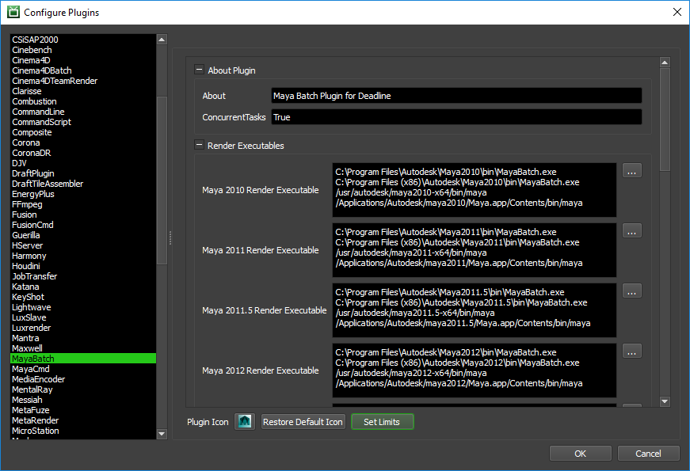
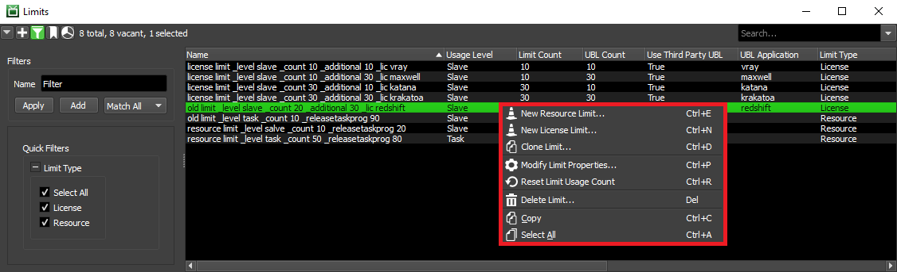
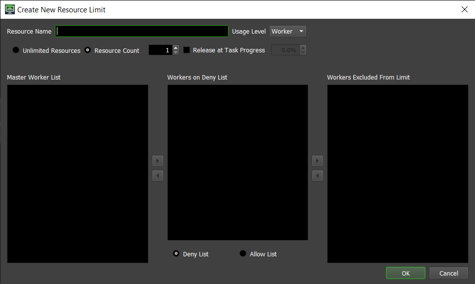

Limits and Machine Limits¶
Overview¶
Limits are used to restrict access to a certain resource that can be shared by multiple jobs.
For example, it’s not uncommon for a render farm to have more render nodes than floating licenses for a specific rendering application or plugin. In this situation, contention for floating licenses can lead to license errors when those floating licenses have been exhausted, and these license errors can lead to wasted render time and reduced productivity. License Limits can be used to in this case to restrict access to a particular floating license.
Another example is shared data on a file server. Many Jobs could require access to the same data, like textures, particle caches, etc, which normally isn’t an issue (since they’re on a file server). However, perhaps the file server isn’t capable of serving that data to a large number of render nodes simultaneously, or perhaps the network doesn’t have the bandwidth to transfer that much data at once. This situation can lead to file server or network instability, which can lead to increased render times or errors. Resource Limits can be used in this case to restrict access to non-license resource.
Machine Limits function similarly, but are on a per-Job basis. Instead of limiting how many Workers can render a group of Jobs, they limit the number of Workers that can render one particular Job. This is useful if you want to prevent a job from potentially taking up the entire farm.
Finally, plugin Limits ensure 1 or more Limits are always applied to a certain application plugin, no matter how many Jobs are being processed.
Job Machine Limits¶
Machine Limits are a per-Job option, and can be managed through the Job’s Properties window, which you can get to by right-clicking on the Job and selecting ‘Modify Job Properties’. More information on the available Machine Limit settings can be found in the Controlling Jobs documentation.

Plugin Limits¶
Plugin Limits are a per-Plugin (application) option, and can be managed through Configure Plugins… under Tools when in Power User mode. Plugin level limits via the Set Limits button allows you to assign one or more limits to always be applied to a certain application plugin. This ensures that limit is applied to all jobs that process using that specific plugin in your farm.
Limits¶
Deadline 10 introduces the concept of Limit types, and there are two types:
License Limits: These are used to restrict access to floating licenses, which helps avoid errors when those licenses are exhausted. They also enable 3rd Party Usage-Based Licensing (UBL).
Resource Limits: These are used to restrict access to non-license resources, such as large data caches.
Jobs (or plugins) can be configured to require one or more Limits, and a Worker will only render a job if it is able to acquire a ‘Stub’ for each Limit. Every Stub that is acquired for a Limit counts against that Limit’s usage. For example, if a Limit has a maximum of 10, and 8 Stubs have been acquired by different Workers, then only 2 more Stubs are available. If all the Stubs for a Limit have been acquired, then no more Workers will be able to pick up jobs that require that Limit. When a Worker finishes a job, it returns any unused Stubs so that other Workers can acquire them.
Both types of Limits can be managed from the Limits panel in the Monitor while in Power User mode (or as a user with appropriate User Group privileges). This list shows all the Limits that are in your Repository. It also displays useful information about each Limit, such as its Name, Status, Limit Type, and the number of Limit Stubs that are currently in use.
Note
Limit types were introduced in Deadline 10.0.9. If you’re upgrading from an earlier version of Deadline 10, any existing Limits will have their type assigned automatically, and will function as normal. There is no need to edit them.
By default, the Limits panel will show both types of Limits, and you can use the Limit Type quick filter to filter out one of the types if you wish. Simply toggle on the Quick Filter button in the top left corner of the Limits panel, and select the Limit Type that you want to see in the Quick Filter panel that appears on the left.
You can access many options for the Limits by right-clicking on them, and you can create a new License or Resource Limit by clicking on the [+] button in the top left corner of the Limits panel. If the Limits panel is not visible, see the Panel Features documentation for instructions on how to create new panels in the Monitor.

New License Limit¶
Use this option to add a new License Limit to your Repository. This is also accessible using the shortcut Ctrl + N.

You can modify the following settings for the new License Limit:
License Name
The name of the new License Limit. Note that this setting cannot be changed once the Limit has been created.
Usage Level
The level at which a Limit Count will be checked out. ‘Worker’ is the default, and will require each Worker to acquire a Stub; if ‘Machine’ is selected, only a single Stub will be required for all Workers on the same machine. Conversely, if ‘Task’ is selected, Workers will try to acquire one Stub per concurrent Render Thread. Note that this setting cannot be changed after Limit creation.
Enable Existing Licenses Usage
This option should be enabled if you are using this Limit to manage floating/network licenses. If you are only using this Limit for 3rd Party UBL, you can leave this disabled.
Unlimited Licenses: If you happen to have unlimited floating/network licenses, you can enable this option, and there will be no restriction on the number of Stubs that can be acquired for this Limit. This isn’t the typical use case though, and if this option is enabled, you can’t use 3rd Party UBL because it only activates when the existing license threshold has been reached.
License Count: If you have a finite amount of floating/network licenses (which is the typical use case), this is the number of licenses you have. If you are also using 3rd Party UBL, it will activate when these existing licenses have been exhausted.
Use Usage-Based Licensing
This option should be enabled if you are using 3rd Party Usage-Based Licensing. If this is used in combination with Existing Licenses, it will only activate when those existing licenses have been exhausted (which means you can’t use the Unlimited Licenses option). If this option is used on its own, then any Worker that acquires a Stub for this Limit will consume 3rd Party UBL.
UBL Application: This is the application that 3rd Party UBL is being used for (one application per Limit). If you are using 3rd Party UBL with multiple applications, you will need to create a Limit for each application.
Unlimited UBL: Use this option if you don’t want to restrict the number of Workers that can use 3rd Party UBL. This can be useful if the Worker count for your farm fluctuates, and you want to ensure that all Workers can use 3rd Party UBL.
UBL Count: Use this option if you want to restrict the number of Workers that can use 3rd Party UBL. This can be useful if you want to keep costs down.
Workers on Allow List and Deny List
If Workers are on a deny list, they will never try to render jobs associated with this Limit. If Workers are on an allow list, then they are the only ones that will try to render jobs associated with this Limit. Note that an empty deny list and an empty allow list are functionally equivalent, and have no impact on which machines the job renders on.
Workers Excluded From Limit
These Workers will ignore this Limit and won’t contribute to the Limit Count. This is useful if you are juggling a mix of floating and node-locked licenses, in which case your machines with node-locked licenses should be placed on this list.
New Resource Limit¶
Use this option to add a new Resource Limit to your Repository. This is also accessible using the shortcut Ctrl + E.
You can modify the following settings for the new Resource Limit:
Resource Name
The name of the new Resource Limit. Note that this setting cannot be changed once the Limit has been created.
Usage Level
The level at which a Resource Count will be checked out. ‘Worker’ is the default, and will require each Worker to acquire a Stub; if ‘Machine’ is selected, only a single Stub will be required for all Workers on the same machine. Conversely, if ‘Task’ is selected, Workers will try to acquire one Stub per concurrent Render Thread. Note that this setting cannot be changed after Limit creation.
Unlimited Resources
If selected, then the Resource Limit can be used by an unlimited number of Workers. Setting this will ignore the Resource Count value.
Resource Count
The maximum number of simultaneous uses (Stubs) that this Resource Limit can support at any given time. What counts as a ‘use/Stub’ is based on the Usage Level set above. Setting the Resource Count to 0 will result in no Jobs being rendered that require this Limit, but this can be useful if you want to temporarily disable a Limit without deleting it.
Release at Task Progress
If enabled, Workers will release their Resource Limit stub when the current Task reaches the specified percentage. Note that support for Task progress depends on the plugin that the Job uses for rendering, and not all plugins support Task progress.
Workers on Allow List and Deny List
If Workers (or Machines, depending on Level selected above) are on a deny list, they will never try to render jobs associated with this Limit. If Workers/Machines are on an allow list, then they are the only ones that will try to render jobs associated with this Limit. Note that an empty deny list and an empty allow list are functionally equivalent, and have no impact on which machines the job renders on.
Workers Excluded From Limit
These Workers (or Machines, depending on Level selected above) will ignore this resource Limit and won’t contribute to the Resource Count.
Clone Limit¶
This option allows you to create a new Limit while using an existing Limit as a template. It will bring up a dialog interface associated to the type of the selected limit, that is very similar to the one pictured in Create New Limit section, with all the same options. This option is handy if you want to create a Limit that is very similar to an existing one but with a small variation.
Modify Limit Properties¶
This option allows you to edit the settings for an existing Limit. All of the settings described in both New Limit sections above can be changed except for the Limit’s Name and Usage Level, which cannot be changed once the Limit has been created.
Reset Limit Usage Count¶
Sometimes a Limit Stub will get orphaned, meaning that it is counting against the Limit’s usage count, but no machines are actually using it. After a while, Deadline will eventually clean up these orphaned Limit Stubs. This option provides the means to delete all existing Stubs immediately (whether they are orphaned or not), which will require Workers to acquire them again.
Delete Limit¶
Removes an existing Limit from your Repository. Any Jobs associated with deleted Limits will still be able to render, but they will print out Warnings indicating that the Limit no longer exists.
Limits and Job Scheduling¶
Although Limits and Job Machine Limits aren’t priority-based like Pools, they do have an impact on job scheduling. Here are some examples.
Limits
If a job is assigned to a Limit, and that Limit is currently maxed out, the job will not be picked up by any additional Workers.
If a job is assigned to a Limit, and that Limit has an allow list, the job will only render on the Workers in that allow list.
If a job is assigned to two Limits, and one of those Limits is currently maxed out, the job will not be picked up by any additional Workers. This is because a Worker must be able to acquire all Limits that the job requires.
If a job is assigned to two Limits, and one of those Limits has worker001 on its deny list, worker001 will never pick up the job. This is because a Worker must be able to acquire all Limits that the job requires.
Job Machine Limits
If a job has a Machine Limit greater than 0, and that Limit is currently maxed out, the job will not be picked up by any additional Workers.
If a job has an allow list, the job will only render on the Workers in that allow list.

{kind=link}
{kind=link}
{kind=link}